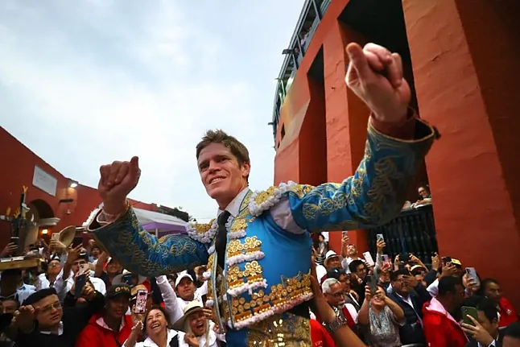

Unidad educativa de Salasaca protege la cultura ancestral
FECHA: 23 DE SEPTIEMBRE DEL 2023
En un esfuerzo por preservar y promover la rica herencia cultural de la comunidad, la Unidad Educativa de Salasaca ha lanzado una serie de iniciativas que buscan fortalecer la identidad ancestral de sus estudiantes y de la comunidad en general. A través de talleres, exposiciones y programas educativos, la institución se ha convertido en un referente de la defensa y difusión de las tradiciones indígenas de este pueblo kichwa.

Con el apoyo de los docentes y líderes comunitarios, los estudiantes de la unidad educativa han estado inmersos en actividades que incluyen el aprendizaje de la lengua Kichwa, la elaboración de textiles tradicionales y la danza folklórica, entre otras. El objetivo es que los jóvenes, al mismo tiempo que acceden a una educación moderna, mantengan vivas las costumbres de sus antepasados y las compartan con las nuevas generaciones. En palabras de la directora del establecimiento, María Teresa Pilata, "Es fundamental que nuestros estudiantes no solo reciban educación académica, sino también formación en valores y conocimientos que les permitan valorar sus raíces, fortalecer su identidad y aportar a la comunidad con conciencia de su historia y cultura". Uno de los proyectos más destacados es el "Rikchary", una feria anual en la que los estudiantes presentan productos y actividades relacionadas con la cultura ancestral. Este evento no solo involucra a la comunidad educativa, sino también a los habitantes de la parroquia, que tienen la oportunidad de conocer y participar en talleres sobre gastronomía, música y danzas tradicionales. Además, la unidad educativa ha establecido alianzas con centros culturales y organizaciones indígenas, con el fin de que los estudiantes puedan acceder a espacios de intercambio cultural y formación continua. Así, se busca que el conocimiento ancestral no solo se conserve, sino que también se proyecte hacia el futuro, adaptándose a los nuevos tiempos sin perder su esencia. La protección y promoción de la cultura ancestral en Salasaca se presentan como un modelo para otras comunidades que buscan equilibrar el acceso a la educación moderna con el respeto por sus tradiciones. La Unidad Educativa de Salasaca demuestra que es posible educar a las nuevas generaciones sin renunciar a lo que nos hace únicos como pueblos.
Este 31 de octubre se celebra el Día del Escudo Nacional de Ecuador, esta es su historia
FECHA: 31 DE OCTUBRE DEL 2024
El Escudo Nacional es uno de los máximos símbolos patrios de Ecuador, y la fecha para recordar su importancia es cada 31 de octubre.
Cada 31 de octubre se recuerda el Día del Escudo Nacional en Ecuador, un símbolo patrio que ha afrontado varias transformaciones a lo largo del tiempo. De hecho, todo empezó en 1820, cuando el escudo utilizado en aquel entonces era muy diferente al actual, incluso en los colores. ¿Cómo fue el primer escudo? Pues se trataba de un símbolo que presentaba una gran estrella sobre fondo azul, y que se adoptó con la proclamación de la Independencia de Guayaquil, el 9 de octubre de 1820. Y desde aquella fecha, el escudo de Ecuador no paró de cambiar, como se observa en la siguiente infografía.
Borja Jiménez sale a hombros en su confirmación en Lima
FECHA: 11 DE NOVIEMBRE DEL 2024
Borja Jiménez salió a hombros en su confirmación de alternativa en la bicentenaria plaza de Lima, donde reaparecía tras más de un mes de baja por una lesión ósea en la mano.

Borja Jiménez salió a hombros en su confirmación de alternativa en la bicentenaria plaza de Lima, donde reaparecía tras más de un mes de baja por una lesión ósea en la mano. Una oreja con fuerte petición de la segunda paseó Borja Jiménez al primero de la tarde, con el que confirmó su alternativa, un toro de nombre "Cacareo" de Núñez del Cuvillo al que dejó una faena de poder y poso. Después de la ceremonia de entrega de trastos, hubo doblones de mucho gusto por parte del sevillano, que dejó luego dos series de derechazos de mano baja y trazo limpio de mucho calado. También al natural llegó con fuerza arriba, en una serie rematada con un desdén de mucha estética y sabor. El palco le negó la segunda oreja, escuchando una sonora bronca. Al sexto, de nombre "Ricardito", le dejó Borja Jiménez un inicio de faena sentado en el estribo con mucho sabor. El toro siempre derrotaba al final de los muletazos, pero se impuso a esa condición, dejando series meritorias por el lado derecho. Expuso al final en cercanías y dejó una estocada en lo alto. Otra oreja. No permitió el lucimiento de Miguel Ángel Perera el "Brumador II" que hizo segundo, un toro de Sancho Dávila muy soso con el que anduvo firme por el pitón izquierdo el pacense, pero no hubo más opción. Pudo resarcirse cortando una oreja al cuarto, un toro al que dejó un arrebatador inicio capotero de rodillas, luego verónicas de buen y templado trazo, un inicio de faena por péndulos y series de profundidad. Cortó una oreja. Al tercero le dejó un quite Borja Jiménez por chicuelinas muy firme, ante un astado que se revolvía peligrosamente. Alfonso de Lima se topó con un ejemplar que fue tomando cada vez más sentido y poco pudo hacer. Estuvo firme frente al quinto, pero la faena no llegó con fuerza al tendido.